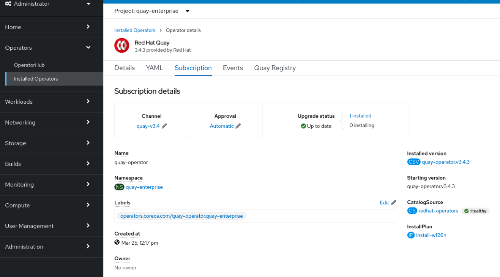

- 1. Upgrade overview
- 2. Upgrading the Red Hat Quay Operator Overview
- 3. Standalone upgrade
- 3.1. Accessing images
- 3.2. Upgrade to 3.9.z from 3.8.z
- 3.3. Upgrade to 3.8.z from 3.7.z
- 3.4. Upgrade to 3.7.z from 3.6.z
- 3.5. Upgrade to 3.7.z from 3.5.z
- 3.6. Upgrade to 3.7.z from 3.4.z
- 3.7. Upgrade to 3.7.z from 3.3.z
- 3.8. Upgrade to 3.6.z from 3.5.z
- 3.9. Upgrade to 3.6.z from 3.4.z
- 3.10. Upgrade to 3.6.z from 3.3.z
- 3.11. Upgrade to 3.5.7 from 3.4.z
- 3.12. Upgrade to 3.4.6 from 3.3.z
- 3.13. Upgrade to 3.3.4 from 3.2.z
- 3.14. Upgrade to 3.2.2 from 3.1.z
- 3.15. Upgrade to 3.1.3 from 3.0.z
- 3.16. Upgrade to 3.0.5 from 2.9.5
- 3.17. Upgrading a geo-replication deployment of Red Hat Quay
- 4. Upgrade Quay Bridge Operator
- 5. Downgrading Red Hat Quay
Chapter 1. Upgrade overview
The upgrade procedure for Red Hat Quay depends on the type of installation you are using.
The Red Hat Quay Operator provides a simple method to deploy and manage a Red Hat Quay cluster. This is the preferred procedure for deploying Red Hat Quay on OpenShift.
The Red Hat Quay Operator should be upgraded using the Operator Lifecycle Manager (OLM) as described in the section "Upgrading Quay using the Quay Operator".
The procedure for upgrading a proof-of-concept or highly available installation of Red Hat Quay and Clair is documented in the section "Standalone upgrade".
Chapter 2. Upgrading the Red Hat Quay Operator Overview
The Red Hat Quay Operator follows a synchronized versioning scheme, which means that each version of the Operator is tied to the version of Red Hat Quay and the components that it manages. There is no field on the QuayRegistry custom resource which sets the version of Red Hat Quay to deploy; the Operator can only deploy a single version of all components. This scheme was chosen to ensure that all components work well together and to reduce the complexity of the Operator needing to know how to manage the lifecycles of many different versions of Red Hat Quay on Kubernetes.
2.1. Operator Lifecycle Manager
The Red Hat Quay Operator should be installed and upgraded using the Operator Lifecycle Manager (OLM). When creating a Subscription with the default approvalStrategy: Automatic, OLM will automatically upgrade the Red Hat Quay Operator whenever a new version becomes available.
When the Red Hat Quay Operator is installed by Operator Lifecycle Manager, it might be configured to support automatic or manual upgrades. This option is shown on the Operator Hub page for the Red Hat Quay Operator during installation. It can also be found in the Red Hat Quay Operator Subscription object by the approvalStrategy field. Choosing Automatic means that your Red Hat Quay Operator will automatically be upgraded whenever a new Operator version is released. If this is not desirable, then the Manual approval strategy should be selected.
2.2. Upgrading the Quay Operator
The standard approach for upgrading installed Operators on OpenShift Container Platform is documented at Upgrading installed Operators.
In general, Red Hat Quay supports upgrades from a prior (N-1) minor version only. For example, upgrading directly from Red Hat Quay 3.0.5 to the latest version of 3.5 is not supported. Instead, users would have to upgrade as follows:
- 3.0.5 → 3.1.3
- 3.1.3 → 3.2.2
- 3.2.2 → 3.3.4
- 3.3.4 → 3.4.z
- 3.4.z → 3.5.z
This is required to ensure that any necessary database migrations are done correctly and in the right order during the upgrade.
In some cases, Red Hat Quay supports direct, single-step upgrades from prior (N-2, N-3) minor versions. This exception to the normal, prior minor version-only, upgrade simplifies the upgrade procedure for customers on older releases. The following upgrade paths are supported:
- 3.3.z → 3.6.z
- 3.4.z → 3.6.z
- 3.4.z → 3.7.z
- 3.5.z → 3.7.z
- 3.7.z → 3.8.z
- 3.8.z → 3.9.z
For users on standalone deployments of Red Hat Quay wanting to upgrade to 3.9, see the Standalone upgrade guide.
2.2.1. Upgrading Quay
To update Red Hat Quay from one minor version to the next, for example, 3.4 → 3.5, you must change the update channel for the Red Hat Quay Operator.
For z stream upgrades, for example, 3.4.2 → 3.4.3, updates are released in the major-minor channel that the user initially selected during install. The procedure to perform a z stream upgrade depends on the approvalStrategy as outlined above. If the approval strategy is set to Automatic, the Quay Operator will upgrade automatically to the newest z stream. This results in automatic, rolling Quay updates to newer z streams with little to no downtime. Otherwise, the update must be manually approved before installation can begin.
2.2.2. Upgrading directly from 3.3.z or 3.4.z to 3.6
The following section provides important information when upgrading from Red Hat Quay 3.3.z or 3.4.z to 3.6.
2.2.2.1. Upgrading with edge routing enabled
- Previously, when running a 3.3.z version of Red Hat Quay with edge routing enabled, users were unable to upgrade to 3.4.z versions of Red Hat Quay. This has been resolved with the release of Red Hat Quay 3.6.
When upgrading from 3.3.z to 3.6, if
tls.terminationis set tononein your Red Hat Quay 3.3.z deployment, it will change to HTTPS with TLS edge termination and use the default cluster wildcard certificate. For example:apiVersion: redhatcop.redhat.io/v1alpha1 kind: QuayEcosystem metadata: name: quay33 spec: quay: imagePullSecretName: redhat-pull-secret enableRepoMirroring: true image: quay.io/quay/quay:v3.3.4-2 ... externalAccess: hostname: quayv33.apps.devcluster.openshift.com tls: termination: none database: ...
2.2.2.2. Upgrading with custom SSL/TLS certificate/key pairs without Subject Alternative Names
There is an issue for customers using their own SSL/TLS certificate/key pairs without Subject Alternative Names (SANs) when upgrading from Red Hat Quay 3.3.4 to Red Hat Quay 3.6 directly. During the upgrade to Red Hat Quay 3.6, the deployment is blocked, with the error message from the Red Hat Quay Operator pod logs indicating that the Red Hat Quay SSL/TLS certificate must have SANs.
If possible, you should regenerate your SSL/TLS certificates with the correct hostname in the SANs. A possible workaround involves defining an environment variable in the quay-app, quay-upgrade and quay-config-editor pods after upgrade to enable CommonName matching:
GODEBUG=x509ignoreCN=0
The GODEBUG=x509ignoreCN=0 flag enables the legacy behavior of treating the CommonName field on X.509 certificates as a hostname when no SANs are present. However, this workaround is not recommended, as it will not persist across a redeployment.
2.2.2.3. Configuring Clair v4 when upgrading from 3.3.z or 3.4.z to 3.6 using the Red Hat Quay Operator
To set up Clair v4 on a new Red Hat Quay deployment on OpenShift Container Platform, it is highly recommended to use the Red Hat Quay Operator. By default, the Red Hat Quay Operator will install or upgrade a Clair deployment along with your Red Hat Quay deployment and configure Clair automatically.
For instructions about setting up Clair v4 in a disconnected OpenShift Container Platform cluster, see Setting Up Clair on a Red Hat Quay OpenShift deployment.
2.2.3. Swift configuration when upgrading from 3.3.z to 3.6
When upgrading from Red Hat Quay 3.3.z to 3.6.z, some users might receive the following error: Switch auth v3 requires tenant_id (string) in os_options. As a workaround, you can manually update your DISTRIBUTED_STORAGE_CONFIG to add the os_options and tenant_id parameters:
DISTRIBUTED_STORAGE_CONFIG:
brscale:
- SwiftStorage
- auth_url: http://****/v3
auth_version: "3"
os_options:
tenant_id: ****
project_name: ocp-base
user_domain_name: Default
storage_path: /datastorage/registry
swift_container: ocp-svc-quay-ha
swift_password: *****
swift_user: *****2.2.4. Changing the update channel for the Red Hat Quay Operator
The subscription of an installed Operator specifies an update channel, which is used to track and receive updates for the Operator. To upgrade the Red Hat Quay Operator to start tracking and receiving updates from a newer channel, change the update channel in the Subscription tab for the installed Red Hat Quay Operator. For subscriptions with an Automatic approval strategy, the upgrade begins automatically and can be monitored on the page that lists the Installed Operators.
2.2.5. Manually approving a pending Operator upgrade
If an installed Operator has the approval strategy in its subscription set to Manual, when new updates are released in its current update channel, the update must be manually approved before installation can begin. If the Red Hat Quay Operator has a pending upgrade, this status will be displayed in the list of Installed Operators. In the Subscription tab for the Red Hat Quay Operator, you can preview the install plan and review the resources that are listed as available for upgrade. If satisfied, click Approve and return to the page that lists Installed Operators to monitor the progress of the upgrade.
The following image shows the Subscription tab in the UI, including the update Channel, the Approval strategy, the Upgrade status and the InstallPlan:

The list of Installed Operators provides a high-level summary of the current Quay installation:

2.3. Upgrading a QuayRegistry
When the Red Hat Quay Operator starts, it immediately looks for any QuayRegistries it can find in the namespace(s) it is configured to watch. When it finds one, the following logic is used:
-
If
status.currentVersionis unset, reconcile as normal. -
If
status.currentVersionequals the Operator version, reconcile as normal. -
If
status.currentVersiondoes not equal the Operator version, check if it can be upgraded. If it can, perform upgrade tasks and set thestatus.currentVersionto the Operator’s version once complete. If it cannot be upgraded, return an error and leave theQuayRegistryand its deployed Kubernetes objects alone.
2.4. Upgrading a QuayEcosystem
Upgrades are supported from previous versions of the Operator which used the QuayEcosystem API for a limited set of configurations. To ensure that migrations do not happen unexpectedly, a special label needs to be applied to the QuayEcosystem for it to be migrated. A new QuayRegistry will be created for the Operator to manage, but the old QuayEcosystem will remain until manually deleted to ensure that you can roll back and still access Quay in case anything goes wrong. To migrate an existing QuayEcosystem to a new QuayRegistry, use the following procedure.
Procedure
Add
"quay-operator/migrate": "true"to themetadata.labelsof theQuayEcosystem.$ oc edit quayecosystem <quayecosystemname>
metadata: labels: quay-operator/migrate: "true"-
Wait for a
QuayRegistryto be created with the samemetadata.nameas yourQuayEcosystem. TheQuayEcosystemwill be marked with the label"quay-operator/migration-complete": "true". -
After the
status.registryEndpointof the newQuayRegistryis set, access Red Hat Quay and confirm that all data and settings were migrated successfully. -
If everything works correctly, you can delete the
QuayEcosystemand Kubernetes garbage collection will clean up all old resources.
2.4.1. Reverting QuayEcosystem Upgrade
If something goes wrong during the automatic upgrade from QuayEcosystem to QuayRegistry, follow these steps to revert back to using the QuayEcosystem:
Procedure
Delete the
QuayRegistryusing either the UI orkubectl:$ kubectl delete -n <namespace> quayregistry <quayecosystem-name>
-
If external access was provided using a
Route, change theRouteto point back to the originalServiceusing the UI orkubectl.
If your QuayEcosystem was managing the PostgreSQL database, the upgrade process will migrate your data to a new PostgreSQL database managed by the upgraded Operator. Your old database will not be changed or removed but Red Hat Quay will no longer use it once the migration is complete. If there are issues during the data migration, the upgrade process will exit and it is recommended that you continue with your database as an unmanaged component.
2.4.2. Supported QuayEcosystem Configurations for Upgrades
The Red Hat Quay Operator reports errors in its logs and in status.conditions if migrating a QuayEcosystem component fails or is unsupported. All unmanaged components should migrate successfully because no Kubernetes resources need to be adopted and all the necessary values are already provided in Red Hat Quay’s config.yaml file.
Database
Ephemeral database not supported (volumeSize field must be set).
Redis
Nothing special needed.
External Access
Only passthrough Route access is supported for automatic migration. Manual migration required for other methods.
-
LoadBalancerwithout custom hostname: After theQuayEcosystemis marked with label"quay-operator/migration-complete": "true", delete themetadata.ownerReferencesfield from existingServicebefore deleting theQuayEcosystemto prevent Kubernetes from garbage collecting theServiceand removing the load balancer. A newServicewill be created withmetadata.nameformat<QuayEcosystem-name>-quay-app. Edit thespec.selectorof the existingServiceto match thespec.selectorof the newServiceso traffic to the old load balancer endpoint will now be directed to the new pods. You are now responsible for the oldService; the Quay Operator will not manage it. -
LoadBalancer/NodePort/Ingresswith custom hostname: A newServiceof typeLoadBalancerwill be created withmetadata.nameformat<QuayEcosystem-name>-quay-app. Change your DNS settings to point to thestatus.loadBalancerendpoint provided by the newService.
Clair
Nothing special needed.
Object Storage
QuayEcosystem did not have a managed object storage component, so object storage will always be marked as unmanaged. Local storage is not supported.
Repository Mirroring
Nothing special needed.
Chapter 3. Standalone upgrade
In general, Red Hat Quay supports upgrades from a prior (N-1) minor version only. For example, upgrading directly from Red Hat Quay 3.0.5 to the latest version of 3.5 is not supported. Instead, users would have to upgrade as follows:
- 3.0.5 → 3.1.3
- 3.1.3 → 3.2.2
- 3.2.2 → 3.3.4
- 3.3.4 → 3.4.z
- 3.4.z → 3.5.z
This is required to ensure that any necessary database migrations are done correctly and in the right order during the upgrade.
In some cases, Red Hat Quay supports direct, single-step upgrades from prior (N-2, N-3) minor versions. This exception to the normal, prior minor version-only, upgrade simplifies the upgrade procedure for customers on older releases. The following upgrade paths are supported:
- 3.3.z → 3.6.z
- 3.4.z → 3.6.z
- 3.4.z → 3.7.z
- 3.5.z → 3.7.z
- 3.7.z → 3.8.z
- 3.9.z → 3.9.z
For users wanting to upgrade the Red Hat Quay Operator, see Upgrading the Red Hat Quay Operator Overview.
This document describess the steps needed to perform each individual upgrade. Determine your current version and then follow the steps in sequential order, starting with your current version and working up to your desired target version.
*Upgrade to 3.9.z from 3.7.z * Upgrade to 3.8.z from 3.7.z * Upgrade to 3.7.z from 3.6.z * Upgrade to 3.7.z from 3.5.z * Upgrade to 3.7.z from 3.4.z * Upgrade to 3.7.z from 3.3.z * Upgrade to 3.6.z from 3.5.z * Upgrade to 3.6.z from 3.4.z * Upgrade to 3.6.z from 3.3.z * Upgrade to 3.5.z from 3.4.z * Upgrade to 3.4.z from 3.3.4 * Upgrade to 3.3.4 from 3.2.2 * Upgrade to 3.2.2 from 3.1.3 * Upgrade to 3.1.3 from 3.0.5 * Upgrade to 3.0.5 from 2.9.5
See the Red Hat Quay Release Notes for information on features for individual releases.
The general procedure for a manual upgrade consists of the following steps:
- Stop the Quay and Clair containers.
- Backup the database and image storage (optional but recommended).
- Start Clair using the new version of the image.
- Wait until Clair is ready to accept connections before starting the new version of Quay.
3.1. Accessing images
Images for Quay 3.4.0 and later are available from registry.redhat.io and registry.access.redhat.com, with authentication set up as described in Red Hat Container Registry Authentication.
Images for Quay 3.3.4 and earlier are available from quay.io, with authentication set up as described in Accessing Red Hat Quay without a CoreOS login.
3.2. Upgrade to 3.9.z from 3.8.z
3.2.1. Target images
- Quay: registry.redhat.io/quay/quay-rhel8:v3.9.0
- Clair: registry.redhat.io/quay/clair-rhel8:4.6.0
- PostgreSQL: registry.redhat.io/rhel8/postgresql-13:1-109
- Redis: registry.redhat.io/rhel8/redis-6:1-110)
3.3. Upgrade to 3.8.z from 3.7.z
3.3.1. Target images
- Quay: registry.redhat.io/quay/quay-rhel8:v3.8.0
- Clair: registry.redhat.io/quay/clair-rhel8:4.6.0
- PostgreSQL: registry.redhat.io/rhel8/postgresql-13:1-109
- Redis: registry.redhat.io/rhel8/redis-6:1-110)
3.4. Upgrade to 3.7.z from 3.6.z
3.4.1. Target images
- Quay: registry.redhat.io/quay/quay-rhel8:v3.7.0
- Clair: registry.redhat.io/quay/clair-rhel8:4.6.0
- PostgreSQL: registry.redhat.io/rhel8/postgresql-13:1-109
- Redis: registry.redhat.io/rhel8/redis-6:1-110)
3.5. Upgrade to 3.7.z from 3.5.z
3.5.1. Target images
- Quay: registry.redhat.io/quay/quay-rhel8:v3.7.0
- Clair: registry.redhat.io/quay/clair-rhel8:4.6.0
- PostgreSQL: registry.redhat.io/rhel8/postgresql-13:1-109
- Redis: registry.redhat.io/rhel8/redis-6:1-110)
3.6. Upgrade to 3.7.z from 3.4.z
3.6.1. Target images
- Quay: registry.redhat.io/quay/quay-rhel8:v3.7.0
- Clair: registry.redhat.io/quay/clair-rhel8:4.6.0
- PostgreSQL: registry.redhat.io/rhel8/postgresql-13:1-109
- Redis: registry.redhat.io/rhel8/redis-6:1-110)
3.7. Upgrade to 3.7.z from 3.3.z
Upgrading to Red Hat Quay 3.7 from 3.3. is unsupported. Users must first upgrade to 3.6 from 3.3, and then upgrade to 3.7. For more information, see Upgrade to 3.6.z from 3.3.z.
3.8. Upgrade to 3.6.z from 3.5.z
3.8.1. Target images
- Quay: registry.redhat.io/quay/quay-rhel8:v3.6.0
- Clair: registry.redhat.io/quay/clair-rhel8:4.6.0
- PostgreSQL: registry.redhat.io/rhel8/postgresql-13:1-109
- Redis: registry.redhat.io/rhel8/redis-6:1-110)
3.9. Upgrade to 3.6.z from 3.4.z
+
Red Hat Quay 3.6 supports direct, single-step upgrade from 3.4.z. This exception to the normal, prior minor version-only, upgrade simplifies the upgrade procedure for customers on older releases.
Upgrading to Red Hat Quay 3.6 from 3.4.z requires a database migration which does not support downgrading back to a prior version of Red Hat Quay. Please back up your database before performing this migration.
Users will also need to configure a completely new Clair v4 instance to replace the old Clair v2 when upgrading from 3.4.z. For instructions on configuring Clair v4, see Setting up Clair on a non-OpenShift Red Hat Quay deployment.
3.9.1. Target images
- Quay: registry.redhat.io/quay/quay-rhel8:v3.6.0
- Clair: registry.redhat.io/quay/clair-rhel8:v3.6.0
- PostgreSQL: registry.redhat.io/rhel8/postgresql-13:1-109
- Redis: registry.redhat.io/rhel8/redis-6:1-110)
3.10. Upgrade to 3.6.z from 3.3.z
+
Red Hat Quay 3.6 supports direct, single-step upgrade from 3.3.z. This exception to the normal, prior minor version-only, upgrade simplifies the upgrade procedure for customers on older releases.
Upgrading to Red Hat Quay 3.6.z from 3.3.z requires a database migration which does not support downgrading back to a prior version of Red Hat Quay. Please back up your database before performing this migration.
Users will also need to configure a completely new Clair v4 instance to replace the old Clair v2 when upgrading from 3.3.z. For instructions on configuring Clair v4, see Setting up Clair on a non-OpenShift Red Hat Quay deployment.
3.10.1. Target images
- Quay: registry.redhat.io/quay/quay-rhel8:v3.6.0
- Clair: registry.redhat.io/quay/clair-rhel8:v3.6.0
- PostgreSQL: registry.redhat.io/rhel8/postgresql-13:1-109
- Redis: registry.redhat.io/rhel8/redis-6:1-110)
3.10.2. Swift configuration when upgrading from 3.3.z to 3.6
When upgrading from Red Hat Quay 3.3.z to 3.6.z, some users might receive the following error: Switch auth v3 requires tenant_id (string) in os_options. As a workaround, you can manually update your DISTRIBUTED_STORAGE_CONFIG to add the os_options and tenant_id parameters:
DISTRIBUTED_STORAGE_CONFIG:
brscale:
- SwiftStorage
- auth_url: http://****/v3
auth_version: "3"
os_options:
tenant_id: ****
project_name: ocp-base
user_domain_name: Default
storage_path: /datastorage/registry
swift_container: ocp-svc-quay-ha
swift_password: *****
swift_user: *****3.11. Upgrade to 3.5.7 from 3.4.z
3.11.1. Target images
- Quay: registry.redhat.io/quay/quay-rhel8:v3.5.7
- Clair: registry.redhat.io/quay/clair-rhel8:v3.9.0
- PostgreSQL: registry.redhat.io/rhel8/postgresql-13:1-109
- Redis: registry.redhat.io/rhel8/redis-6:1-110)
3.12. Upgrade to 3.4.6 from 3.3.z
Upgrading to Quay 3.4 requires a database migration which does not support downgrading back to a prior version of Quay. Please back up your database before performing this migration.
3.12.1. Target images
- Quay: registry.redhat.io/quay/quay-rhel8:v3.4.6
- Clair: registry.redhat.io/quay/clair-rhel8:v3.9.0
- PostgreSQL: registry.redhat.io/rhel8/postgresql-13:1-109
- Redis: registry.redhat.io/rhel8/redis-6:1-110)
3.13. Upgrade to 3.3.4 from 3.2.z
3.13.1. Target images
- Quay: quay.io/redhat/quay:v3.3.4
- Clair: registry.redhat.io/quay/clair-rhel8:v3.9.0
- PostgreSQL: rhscl/postgresql-96-rhel7
- Redis: registry.access.redhat.com/rhscl/redis-32-rhel7
3.14. Upgrade to 3.2.2 from 3.1.z
Once your cluster is running any Red Hat Quay 3.1.z version, to upgrade your cluster to 3.2.2 you must bring down your entire cluster and make a small change to the configuration before bringing it back up with the 3.2.2 version.
Once you set the value of DATABASE_SECRET_KEY in this procedure, do not ever change it. If you do so, then existing robot accounts, API tokens, etc. cannot be used anymore. You would have to create a new robot account and API tokens to use with Quay.
- Take all hosts in the Red Hat Quay cluster out of service.
Generate some random data to use as a database secret key. For example:
$ openssl rand -hex 48 2d023adb9c477305348490aa0fd9c
Add a new DATABASE_SECRET_KEY field to your
config.yamlfile. For example:DATABASE_SECRET_KEY: "2d023adb9c477305348490aa0fd9c"
NoteFor an OpenShift installation, the
config.yamlfile is stored as a secret.-
Bring up one
Quaycontainer to complete the migration to 3.2.2. -
Once the migration is done, make sure the same
config.yamlis available on all nodes and bring up the new quay 3.2.2 service on those nodes. - Start 3.0.z versions of quay-builder and Clair to replace any instances of those containers you want to return to your cluster.
3.14.1. Target images
- Quay: quay.io/redhat/quay:v3.2.2
- Clair: registry.redhat.io/quay/clair-rhel8:v3.9.0
- PostgreSQL: rhscl/postgresql-96-rhel7
- Redis: registry.access.redhat.com/rhscl/redis-32-rhel7
3.15. Upgrade to 3.1.3 from 3.0.z
3.15.1. Target images
- Quay: quay.io/redhat/quay:v3.1.3
- Clair: registry.redhat.io/quay/clair-rhel8:v3.9.0
- PostgreSQL: rhscl/postgresql-96-rhel7
- Redis: registry.access.redhat.com/rhscl/redis-32-rhel7
3.16. Upgrade to 3.0.5 from 2.9.5
For the 2.9.5 to 3.0.5 upgrade, you can either do the whole upgrade with Red Hat Quay down (synchronous upgrade) or only bring down Red Hat Quay for a few minutes and have the bulk of the upgrade continue with Red Hat Quay running (background upgrade).
A background upgrade could take longer to run the upgrade depending on how many tags need to be processed. However, there is less total downtime. The downside of a background upgrade is that you will not have access to the latest features until the upgrade completes. The cluster runs from the Quay v3 container in v2 compatibility mode until the upgrade is complete.
3.16.1. Overview of upgrade
Follow the procedure below if you are starting with a Red Hat Quay 2.y.z cluster. Before upgrading to the latest Red Hat Quay 3.x version, you must first migrate that cluster to 3.0.5, as described here. Once your cluster is running 3.0.5, you can then upgrade to the latest 3.x version by sequentially upgrading to each minor version in turn. For example:
- 3.0.5 → 3.1.3
- 3.1.3 → 3.2.2
- 3.2.2 → 3.3.4
- 3.3.4 → 3.4.z
Before beginning your Red Hat Quay 2.y.z to 3.0 upgrade, please note the following:
- Synchronous upgrade: For a synchronous upgrade, expect less than one hour of total downtime for small installations. Consider a small installation to contain a few thousand container image tags or fewer. For that size installation, you could probably get by with just a couple hours of scheduled downtime. The entire Red Hat Quay service is down for the duration, so if you were to try a synchronous upgrade on a registry with millions of tags, you could potentially be down for several days.
- Background upgrade: For a background upgrade (also called a compatibility mode upgrade), after a short shutdown your Red Hat Quay cluster upgrade runs in the background. For large Red Hat Quay registries, this could take weeks to complete, but the cluster continues to operate in v2 mode for the duration of the upgrade. As a point of reference, one Red Hat Quay v3 upgrade took four days to process approximately 30 million tags across six machines.
- Full features on completion: Before you have access to features associated with Docker version 2, schema 2 changes (such as support for containers of different architectures), the entire migration must complete. Other v3 features are immediately available when you switch over.
-
Upgrade complete: When the upgrade is complete, you need to set V3_UPGRADE_MODE: complete in the Red Hat Quay
config.yamlfile for the new features to be available. All new Red Hat Quay v3 installations automatically have that set.
3.16.2. Prerequisites
To assure the best results, we recommend the following prerequisites:
- Back up your Red Hat Quay database before starting the upgrade (doing regular backups is a general best practice). A good time to do this is right after you have taken down the Red Hat Quay cluster to do the upgrade.
- Back up your storage (also a general best practice).
Upgrade your current Red Hat Quay 2.y.z setup to the latest 2.9.z version (currently 2.9.5) before starting the v3 upgrade. To do that:
-
While the Red Hat Quay cluster is still running, take one node and change the
Quaycontainer on that system to aQuaycontainer that is running the latest 2.9.z version. - Wait for all the database migrations to run, bringing the database up to the latest 2.9.z version. This should only take a few minutes to a half an hour.
-
Once that is done, replace the
Quaycontainer on all the existing nodes with the same latest 2.9.z version. With the entire Red Hat Quay cluster on the new version, you can proceed to the v3 upgrade.
-
While the Red Hat Quay cluster is still running, take one node and change the
3.16.3. Choosing upgrade type
Choose between a synchronous upgrade (complete the upgrade in downtime) and a background upgrade (complete the upgrade while Red Hat Quay is still running). Both of these major-release upgrades require that the Red Hat Quay cluster be down for at least a short period of time.
Regardless of which upgrade type you choose, during the time that the Red Hat Quay cluster is down, if you are using builder and Clair images, you need to also upgrade to those new images:
- Builder: quay.io/redhat/quay-builder:v3.0.5
- Clair: quay.io/redhat/clair-jwt:v3.0.5
Both of those images are available from the registry.redhat.io/quay repository.
3.16.4. Running a synchronous upgrade
To run a synchronous upgrade, where your whole cluster is down for the entire upgrade, do the following:
- Take down your entire Red Hat Quay cluster, including any quay-builder and Clair containers.
Add the following setting to the
config.yamlfile on all nodes:V3_UPGRADE_MODE: complete
Pull and start up the v3 container on a single node and wait for however long it takes to do the upgrade (it will take a few minutes). Use the following container or later:
Quay: quay.io/redhat/quay:v3.0.5
Note that the
Quaycontainer comes up on ports 8080 and 8443 for Red Hat Quay 3, instead of 80 and 443, as they did for Red Hat Quay 2. Therefore, we recommend remapping 8080 and 8443 into 80 and 443, respectively, as shown in this example:
# docker run --restart=always -p 80:8080 -p 443:8443 \ --sysctl net.core.somaxconn=4096 \ --privileged=true \ -v /mnt/quay/config:/conf/stack:Z \ -v /mnt/quay/storage:/datastorage:Z \ -d quay.io/redhat/quay:v3.0.5
- After the upgrade completes, bring the Red Hat Quay 3 container up on all other nodes.
- Start 3.0.z versions of quay-builder and Clair to replace any instances of those containers you want to return to your cluster.
- Verify that Red Hat Quay is working, including pushes and pulls of containers compatible with Docker version 2, schema 2. This can include windows container images and images of different computer architectures (arm, ppc, etc.).
3.16.5. Running a background upgrade
To run a background upgrade, you need only bring down your cluster for a short period of time on two occasions. When you bring the cluster back up after the first downtime, the quay v3 container runs in v2 compatibility mode as it backfills the database. This background process can take hours or even days to complete. Background upgrades are recommended for large installations where downtime of more than a few hours would be a problem.
For this type of upgrade, you put Red Hat Quay into a compatibility mode, where you have a Quay 3 container running, but it is running on the old data model while the upgrade completes. Here’s what you do:
Pull the Red Hat Quay 3 container to all the nodes. Use the following container or later:
quay.io/redhat/quay:v3.0.5
- Take down your entire Red Hat Quay cluster, including any quay-builder and Clair containers.
Edit the
config.yamlfile on each node and set the upgrade mode to background as follows:V3_UPGRADE_MODE: background
Bring the Red Hat Quay 3 container up on a single node and wait for the migrations to complete (should take a few minutes maximum). Here is an example of that command:
Note that the
Quaycontainer comes up on ports 8080 and 8443 for Red Hat Quay 3, instead of 80 and 443, as they did for Red Hat Quay 2. Therefore, we recommend remapping 8080 and 8443 into 80 and 443, respectively, as shown in this example:# docker run --restart=always -p 80:8080 -p 443:8443 \ --sysctl net.core.somaxconn=4096 \ --privileged=true \ -v /mnt/quay/config:/conf/stack:Z \ -v /mnt/quay/storage:/datastorage:Z \ -d quay.io/redhat/quay:v3.0.5
- Bring the Red Hat Quay 3 container up on all the other nodes.
-
Monitor the
/upgradeprogressAPI endpoint until it reports done enough to move to the next step (the status reaches 99%). For example, viewhttps://myquay.example.com/upgradeprogressor use some other tool to query the API. - Once the background process is far enough along you have to schedule another maintenance window.
- During your scheduled maintenance, take the entire Red Hat Quay cluster down.
Edit the
config.yamlfile on each node and set the upgrade mode tocompleteas follows:V3_UPGRADE_MODE: complete
- Bring Red Hat Quay back up on one node to have it do a final check.
- Once the final check is done, bring Red Hat Quay v3 back up on all the other nodes.
- Start 3.0.z versions of quay-builder and Clair to replace any instances of those containers you want to return to your cluster.
- Verify Quay is working, including pushes and pulls of containers compatible with Docker version 2, schema 2. This can include windows container images and images of different computer architectures (arm, ppc, etc.).
3.16.6. Target images
- Quay: quay.io/redhat/quay:v3.0.5
- Clair: quay.io/redhat/clair-jwt:v3.0.5
- Redis: registry.access.redhat.com/rhscl/redis-32-rhel7
- PostgreSQL: rhscl/postgresql-96-rhel7
- Builder: quay.io/redhat/quay-builder:v3.0.5
3.17. Upgrading a geo-replication deployment of Red Hat Quay
Use the following procedure to upgrade your geo-replication Red Hat Quay deployment.
- When upgrading geo-replication Red Hat Quay deployments to the next y-stream release (for example, Red Hat Quay 3.7 → Red Hat Quay 3.8), or geo-replication deployments, you must stop operations before upgrading.
- There is intermittent downtime down upgrading from one y-stream release to the next.
- It is highly recommended to back up your Red Hat Quay deployment before upgrading.
Prerequisites
-
You have logged into
registry.redhat.io
This procedure assumes that you are running Red Hat Quay services on three (or more) systems. For more information, see Preparing for Red Hat Quay high availability.
Obtain a list of all Red Hat Quay instances on each system running a Red Hat Quay instance.
Enter the following command on System A to reveal the Red Hat Quay instances:
$ sudo podman ps
Example output
CONTAINER ID IMAGE COMMAND CREATED STATUS PORTS NAMES ec16ece208c0 registry.redhat.io/quay/quay-rhel8:v3.7.0 registry 6 minutes ago Up 6 minutes ago 0.0.0.0:80->8080/tcp, 0.0.0.0:443->8443/tcp quay01
Enter the following command on System B to reveal the Red Hat Quay instances:
$ sudo podman ps
Example output
CONTAINER ID IMAGE COMMAND CREATED STATUS PORTS NAMES 7ae0c9a8b37d registry.redhat.io/quay/quay-rhel8:v3.7.0 registry 5 minutes ago Up 2 seconds ago 0.0.0.0:82->8080/tcp, 0.0.0.0:445->8443/tcp quay02
Enter the following command on System C to reveal the Red Hat Quay instances:
$ sudo podman ps
Example output
CONTAINER ID IMAGE COMMAND CREATED STATUS PORTS NAMES e75c4aebfee9 registry.redhat.io/quay/quay-rhel8:v3.7.0 registry 4 seconds ago Up 4 seconds ago 0.0.0.0:84->8080/tcp, 0.0.0.0:447->8443/tcp quay03
Temporarily shut down all Red Hat Quay instances on each system.
Enter the following command on System A to shut down the Red Hat Quay instance:
$ sudo podman stop ec16ece208c0
Enter the following command on System B to shut down the Red Hat Quay instance:
$ sudo podman stop 7ae0c9a8b37d
Enter the following command on System C to shut down the Red Hat Quay instance:
$ sudo podman stop e75c4aebfee9
Obtain the latest Red Hat Quay version, for example, Red Hat Quay 3.9, on each system.
Enter the following command on System A to obtain the latest Red Hat Quay version:
$ sudo podman pull registry.redhat.io/quay/quay-rhel8:v3.8.0
Enter the following command on System B to obtain the latest Red Hat Quay version:
$ sudo podman pull registry.redhat.io/quay/quay-rhel8:v3.8.0
Enter the following command on System C to obtain the latest Red Hat Quay version:
$ sudo podman pull registry.redhat.io/quay/quay-rhel8:v3.8.0
On System A of your highly available Red Hat Quay deployment, run the new image version, for example, Red Hat Quay 3.9:
# sudo podman run --restart=always -p 443:8443 -p 80:8080 \ --sysctl net.core.somaxconn=4096 \ --name=quay01 \ -v /mnt/quay/config:/conf/stack:Z \ -v /mnt/quay/storage:/datastorage:Z \ -d registry.redhat.io/quay/quay-rhel8:v3.8.0
Wait for the new Red Hat Quay container to become fully operational on System A. You can check the status of the container by entering the following command:
$ sudo podman ps
Example output
CONTAINER ID IMAGE COMMAND CREATED STATUS PORTS NAMES 70b9f38c3fb4 registry.redhat.io/quay/quay-rhel8:v3.8.0 registry 2 seconds ago Up 2 seconds ago 0.0.0.0:82->8080/tcp, 0.0.0.0:445->8443/tcp quay01
- Optional: Ensure that Red Hat Quay is fully operation by navigating to the Red Hat Quay UI.
After ensuring that Red Hat Quay on System A is fully operational, run the new image versions on System B and on System C.
On System B of your highly available Red Hat Quay deployment, run the new image version, for example, Red Hat Quay 3.9:
# sudo podman run --restart=always -p 443:8443 -p 80:8080 \ --sysctl net.core.somaxconn=4096 \ --name=quay02 \ -v /mnt/quay/config:/conf/stack:Z \ -v /mnt/quay/storage:/datastorage:Z \ -d registry.redhat.io/quay/quay-rhel8:v3.8.0
On System C of your highly available Red Hat Quay deployment, run the new image version, for example, Red Hat Quay 3.9:
# sudo podman run --restart=always -p 443:8443 -p 80:8080 \ --sysctl net.core.somaxconn=4096 \ --name=quay03 \ -v /mnt/quay/config:/conf/stack:Z \ -v /mnt/quay/storage:/datastorage:Z \ -d registry.redhat.io/quay/quay-rhel8:v3.8.0
You can check the status of the containers on System B and on System C by entering the following command:
$ sudo podman ps
Chapter 4. Upgrade Quay Bridge Operator
To upgrade the Quay Bridge Operator (QBO), change the Channel Subscription update channel in the Subscription tab to the desired channel.
When upgrading QBO from version 3.5 to 3.7, a number of extra steps are required:
You need to create a new
QuayIntegrationcustom resource. This can be completed in the Web Console or from the command line.upgrade-quay-integration.yaml
- apiVersion: quay.redhat.com/v1 kind: QuayIntegration metadata: name: example-quayintegration-new spec: clusterID: openshift 1 credentialsSecret: name: quay-integration namespace: openshift-operators insecureRegistry: false quayHostname: https://registry-quay-quay35.router-default.apps.cluster.openshift.com- 1
- Make sure that the
clusterIDmatches the value for the existingQuayIntegrationresource.
Create the new
QuayIntegrationcustom resource:$ oc create -f upgrade-quay-integration.yaml
-
Delete the old
QuayIntegrationcustom resource. Delete the old
mutatingwebhookconfigurations:$ oc delete mutatingwebhookconfigurations.admissionregistration.k8s.io quay-bridge-operator
4.1. Upgrading a geo-replication deployment of the Red Hat Quay Operator
Use the following procedure to upgrade your geo-replicated Red Hat Quay Operator.
- When upgrading geo-replicated Red Hat Quay Operator deployments to the next y-stream release (for example, Red Hat Quay 3.7 → Red Hat Quay 3.8), you must stop operations before upgrading.
- There is intermittent downtime down upgrading from one y-stream release to the next.
- It is highly recommended to back up your Red Hat Quay Operator deployment before upgrading.
This procedure assumes that you are running the Red Hat Quay Operator on three (or more) systems. For this procedure, we will assume three systems named System A, System B, and System C. System A will serve as the primary system in which the Red Hat Quay Operator is deployed.
On System B and System C, scale down your Red Hat Quay Operator deployment. This is done by disabling auto scaling and overriding the replica county for Red Hat Quay, mirror workers, and Clair (if it is managed). Use the following
quayregistry.yamlfile as a reference:apiVersion: quay.redhat.com/v1 kind: QuayRegistry metadata: name: registry namespace: ns spec: components: … - kind: horizontalpodautoscaler managed: false 1 - kind: quay managed: true overrides: 2 replicas: 0 - kind: clair managed: true overrides: replicas: 0 - kind: mirror managed: true overrides: replicas: 0 …NoteYou must keep the Red Hat Quay Operator running on System A. Do not update the
quayregistry.yamlfile on System A.Wait for the
registry-quay-app,registry-quay-mirror, andregistry-clair-apppods to disappear. Enter the following command to check their status:oc get pods -n <quay-namespace>
Example output
quay-operator.v3.7.1-6f9d859bd-p5ftc 1/1 Running 0 12m quayregistry-clair-postgres-7487f5bd86-xnxpr 1/1 Running 1 (12m ago) 12m quayregistry-quay-app-upgrade-xq2v6 0/1 Completed 0 12m quayregistry-quay-config-editor-6dfdcfc44f-hlvwm 1/1 Running 0 73s quayregistry-quay-redis-84f888776f-hhgms 1/1 Running 0 12m
- On System A, initiate a Red Hat Quay Operator upgrade to the latest y-stream version. This is a manual process. For more information about upgrading installed Operators, see Upgrading installed Operators. For more information about Red Hat Quay upgrade paths, see Upgrading the Red Hat Quay Operator.
-
After the new Red Hat Quay Operator is installed, the necessary upgrades on the cluster are automatically completed. Afterwards, new Red Hat Quay pods are started with the latest y-stream version. Additionally, new
Quaypods are scheduled and started. Confirm that the update has properly worked by navigating to the Red Hat Quay UI:
In the OpenShift console, navigate to Operators → Installed Operators, and click the Registry Endpoint link.
ImportantDo not execute the following step until the Red Hat Quay UI is available. Do not upgrade the Red Hat Quay Operator on System B and on System C until the UI is available on System A.
After confirming that the update has properly worked on System A, initiate the Red Hat Quay Operator on System B and on System C. The Operator upgrade results in an upgraded Red Hat Quay installation, and the pods are restarted.
NoteBecause the database schema is correct for the new y-stream installation, the new pods on System B and on System C should quickly start.
Chapter 5. Downgrading Red Hat Quay
Red Hat Quay only supports rolling back, or downgrading, to previous z-stream versions, for example, 3.7.2 → 3.7.1. Rolling back to previous y-stream versions (3.7.0 → 3.6.0) is not supported. This is because Red Hat Quay updates might contain database schema upgrades that are applied when upgrading to a new version of Red Hat Quay. Database schema upgrades are not considered backwards compatible.
Downgrading to previous z-streams is neither recommended nor supported by either Operator based deployments or virtual machine based deployments. Downgrading should only be done in extreme circumstances. The decision to rollback your Red Hat Quay deployment must be made in conjunction with the Red Hat Quay support and development teams. For more information, contact Red Hat Quay support.